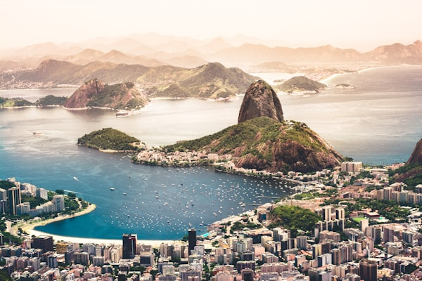
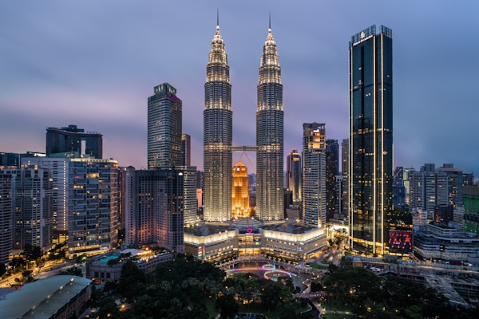
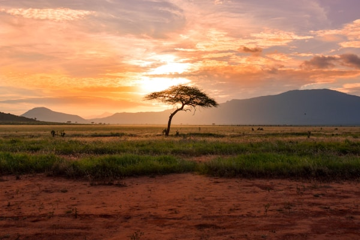

Destinos em Destaque
Conheça os lugares mais visitados e amados do Brasil

Rio de Janeiro
A Cidade Maravilhosa com praias famosas, o Cristo Redentor e um carnaval inesquecível.
Sudeste
Amazônia
A maior floresta tropical do mundo, repleta de biodiversidade e aventura na selva.
Norte
Pantanal
O maior complexo de zonas úmidas tropicais do planeta, paraíso do ecoturismo.
Centro-OesteSobre a Brasil Encantado
A Brasil Encantado é uma agência de turismo dedicada a revelar as riquezas do nosso imenso país. Com anos de experiência, conectamos viajantes apaixonados aos destinos mais autênticos e deslumbrantes do Brasil.
Oferecemos roteiros personalizados, guias especializados e experiências únicas que vão muito além dos destinos convencionais. Seja para relaxar nas praias do Nordeste, explorar a natureza da Amazônia ou se encantar com a cultura do Sul, temos o roteiro ideal para você.
Entre em Contato
Brasil em Imagens
Assista e se inspire para a sua próxima viagem